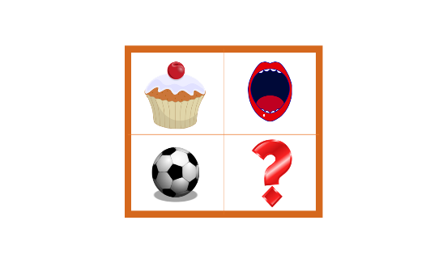

KIDS INTELLIGENCE (IQ TEST) ৰ ওপৰত সঘনাই সোধা প্ৰশ্ন কিছুমান
শিশুৰ বাবে আইকিউ টেষ্ট কি?
আইকিউ পৰীক্ষাৰ দ্বাৰা শিশুৰ বৌদ্ধিক ক্ষমতা তেওঁলোকৰ বয়সৰ সমনীয়াৰ তুলনাত জুখিব পাৰি। এই পৰীক্ষাসমূহত প্ৰায়ে শিশুৰ বাবে উপযোগী অভিযোজিত ফৰ্মেট ব্যৱহাৰ কৰা হয়, য'ত যুক্তি, বুজাবুজি, স্মৃতিশক্তি আৰু সমস্যা সমাধানৰ দক্ষতাৰ মূল্যায়নৰ বাবে তৈয়াৰ কৰা প্ৰশ্ন থাকে।
শিশুৰ বাবে আইকিউ পৰীক্ষা কিয় প্ৰয়োজনীয়?
আইকিউ পৰীক্ষাই জ্ঞানমূলক শক্তি আৰু দুৰ্বলতা চিনাক্ত কৰাত সহায় কৰে। এই পৰীক্ষাই শিক্ষণ অক্ষমতাক চিনি উলিয়াব পাৰে, নিৰ্দিষ্ট শিক্ষা পৰিকল্পনাৰ বাবে সাজু কৰিব পাৰে, বা উন্নত শিক্ষণ সুযোগৰ বাবে যোগ্য কৰি তুলিব পাৰে।
জনপ্ৰিয় কিডছ আইকিউ টেষ্ট
- শিশুৰ বাবে ৱেচলাৰ বুদ্ধিমত্তা স্কেল (WISC-V): ৬–১৬ বছৰ বয়সৰ বাবে প্ৰস্তুত কৰা এই পৰীক্ষাটোৱে যুক্তি, স্মৃতিশক্তি আৰু প্ৰক্ৰিয়াকৰণৰ গতিৰ মূল্যায়ন কৰে।
- ষ্টেনফৰ্ড-বিনেট আইকিউ পৰীক্ষা: ২ বছৰৰ পৰা প্ৰাপ্তবয়স্ক বয়সৰ বাবে উপযোগী, ই যুক্তি, স্মৃতিশক্তি, আৰু মৌখিক দক্ষতা জুখিব পাৰে।
- মেনছাৰ তত্বাৱধানত আইকিউ পৰীক্ষা: ১০.৫ বছৰ আৰু তাৰ ওপৰৰ শিশুৰ বাবে উপলব্ধ, ই মৌখিক আৰু অমৌখিক যুক্তিৰ ওপৰত গুৰুত্ব আৰোপ কৰে।
আইকিউ পৰীক্ষাই মেধাৱীতা বা বিকাশৰ অসুবিধা চিনাক্ত কৰিব পাৰে, শিশুক সমৰ্থন বা সমৃদ্ধিৰ প্ৰয়োজন হ'ব পৰা ক্ষেত্ৰসমূহ স্পষ্ট কৰি তুলিব পাৰে। কিন্তু ই কেৱল নিৰ্দিষ্ট বৌদ্ধিক দক্ষতা জুখিব পাৰে আৰু সৃষ্টিশীলতা, অধ্যৱসায় বা আৱেগিক বুদ্ধিমত্তা প্ৰতিফলিত নকৰে।
আইকিউ টেষ্টৰ বাবে শিশুক কেনেকৈ প্ৰস্তুত কৰিব পাৰি
- পৰীক্ষাৰ ধৰণৰ সৈতে তেওঁলোকক পৰিচিত কৰক: পৰীক্ষাৰ আৰ্হিৰ সৈতে তেওঁলোকক মনোযোগী কৰিবলৈ খেল আৰু সাঁথৰ ব্যৱহাৰ কৰক।
- অনুশীলন পৰীক্ষা: ল’ৰা-ছোৱালীৰ আত্মবিশ্বাস গঢ়ি তুলিবলৈ ম’ক টেষ্ট সহায়ক হ’ব পাৰে।
- পঢ়া-শুনা উৎসাহিত কৰা: পঢ়া-শুনাৰ অভ্যাসে বুজাবুজি আৰু শব্দভাণ্ডাৰ বৃদ্ধি কৰে।
- উদ্বেগ হ্ৰাস কৰক: প্ৰথমেই তেওঁলোকক আশ্বস্ত কৰক যে এই পৰীক্ষাৰ প্ৰধান লক্ষ্য হৈছে তেওঁলোকে সমস্যাৰ সৈতে কেনেদৰে অলপ অলপকৈ আগবাঢ়িছে সেই কথা বুজি পোৱাটোহে।
- সুস্থ জীৱনশৈলীৰ বিচাৰ: সুষম খাদ্য, নিয়মীয়া ব্যায়াম, আৰু পৰ্যাপ্ত টোপনিয়ে জ্ঞান ক্ষমতা বৃদ্ধি কৰে।
- মবাইল বা টিভিৰ পৰ্দাৰ সময় সীমিত কৰক: এইবোৰৰ অত্যধিক সংস্পৰ্শই জ্ঞানমূলক বিকাশত প্ৰভাৱ পেলাব পাৰে।
- পুৰস্কাৰৰ পৰিকল্পনা কৰক: কোনো পৰীক্ষাৰ পিছত ইতিবাচক অভিজ্ঞতাক উৎসাহিত কৰিবলৈ তেওঁলোকৰ প্ৰচেষ্টাক স্বীকৃতি দিয়ক।
- পৰীক্ষাৰ আগতে জিৰণি লোৱাটো নিশ্চিত কৰক: ৰাতি ভাল টোপনি আৰু স্বাস্থ্যসন্মত আহাৰৰ ব্যৱস্থা কৰক।
চূড়ান্ত চিন্তা
আই কিউ পৰীক্ষাৰ সৈতে পৰিচিত হ’লে অদৰ্কাৰী উদ্বেগ হ্ৰাস পায় আৰু কৰ্মক্ষমতা উন্নত হয়। বুদ্ধিমত্তাৰ বহু মাত্ৰা চিনাক্ত কৰাৰ লগতে শিশুৰ বৌদ্ধিক ক্ষমতাৰ বিষয়ে অন্তৰ্দৃষ্টি প্ৰদান কৰি বহল মূল্যায়নৰ অংশ হিচাপে আইকিউ পৰীক্ষাক সমল কৰি ল’ব লাগে। এই পৰীক্ষাসমূহ শিক্ষাবিদ আৰু অভিভাৱকসকলৰ বাবে বিকাশৰ প্ৰয়োজনীয়তাসমূহ পূৰণ কৰিবলৈ বা মেধাৱীতাক লালন-পালন কৰিবলৈ এক উপযোগী আহিলা।
উদাহৰণ ১: মেট্ৰিচ উপপৰীক্ষা
উদাহৰণ প্ৰশ্ন
প্ৰশ্ন: সোঁফালৰ ছবিখনৰ কোনখন ছবি বাওঁফালৰ ছবিখনৰ প্ৰশ্নবোধক চিনৰ ঠাইত খাপ খাব?

উত্তৰঃ A/B/C/D/F